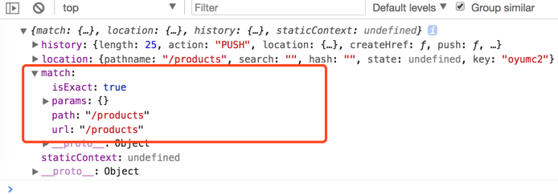

回忆基础知识：
1、hash即URL中"#"字符后面的部分。(location.hash 看下)
①使用浏览器访问网页时，如果网页URL中带有hash，页面就会定位到id（或name）与hash值一样的元素的位置；
②hash还有另一个特点，它的改变不会导致页面重新加载；
③hash值浏览器是不会随请求发送到服务器端的；
④通过window.location.hash属性获取和设置hash值。
window.location.hash值的变化会直接反应到浏览器地址栏（#后面的部分会发生变化），同时，浏览器地址栏hash值的变化也会触发window.location.hash值的变化，从而触发onhashchange事件。
2、hashchange事件（IE8已支持该事件）
①当URL的片段标识符更改时，将触发hashchange事件（跟在#符号后面的URL部分，包括#符号）
②hashchange事件触发时，事件对象会有hash改变前的URL（oldURL）和hash改变后的URL（newURL）两个属性：
window.addEventListener('hashchange', function(e) {
console.log(e.oldURL);
console.log(e.newURL);
}, false);
回忆:
history是HTML5新增的一个api。
其中包括2个方法：
history.pushState()
history.replaceState()
1个事件：window.onpopstate。
函数向浏览器的历史堆栈压入一个url为设定值的记录，并改变历史堆栈的当前指针至栈顶。
history.pushState(stateObject, title, url)，包括三个参数。
stateObj，一个普通的js对象，可以包含任何数据，它包含在新的hsitory实体的state属性中。当用户导航到该状态时，一个popstate事件将会被触发，并且在该事件的e.state中会包含这个stateObj。
title，目前没什么用，我们可以传入一个空字符串，或者一个表示新history状态的字符串。
URL，可选参数，这将会改变浏览器当前的url，但是新的url并不会立刻加载。当时用户此时跳转到另外一个页面，然后再点击后退，该url会加载，并且触发popstate事件。
示例：
history.pushState({name: 'xwj', age: 22}, '', '/profile');
// 浏览器地址会变为http://www.example.com/profile，但并不会加载。同时history的length会加1，state会变为传入的stateObj该接口与pushState参数相同，含义也相同。唯一的区别在于replaceState是替换浏览器历史堆栈的当前历史记录为设定的url。需要注意的是，replaceState不会改动浏览器历史堆栈的当前指针。length不会变。
该事件是window的属性。该事件会在调用浏览器的前进、后退以及执行history.forward、history.back、和history.go触发，因为这些操作有一个共性，即修改了历史堆栈的当前指针。在不改变document的前提下，一旦当前指针改变则会触发onpopstate事件。
完整的 React 路由解决方案
恩，是v4
3.x 版本相比于 2.x 并没有引入任何新的特性，只是将 2.x 版本中部分废弃 API 的 warning 移除掉而已。V4版本相对V2/V3几乎完全重写了，遵循 Just Component 的 API 设计理念。
React Router 保持 UI 与 URL 同步。它拥有简单的 API 与强大的功能。例如代码缓冲加载、动态路由匹配、以及建立正确的位置过渡处理。
react-router V4 分成了三个包：react-router-dom(for web)、react-router-native(for #native)、react-router(core)。react-router提供核心的路由组件与函数。其余两个则提供运行环境（即浏览器与react-native）所需的特定组件。在浏览器中，我们只需使用react-router-dom。
在4.0之前版本的 API 中，
// 示例1
<Router>
<div>
<ul>
<li><Link to="/">首页</Link></li>
<li><Link to="/about">关于</Link></li>
<li><Link to="/topics">主题列表</Link></li>
</ul>
<Route exact path="/" component={Home}/>
<Route path="/about" component={About}/>
<Route path="/topics" component={Topics}/>
</div>
</Router>Router是所有路由组件共用的底层接口，一般我们的应用并不会使用这个接口，而是使用高级的路由：
<BrowserRouter>：使用 HTML5 提供的 history API 来保持 UI 和 URL 的同步；
<HashRouter>：使用 URL 的 hash (例如：window.location.hash) 来保持 UI 和 URL 的同步；
<MemoryRouter>：能在内存保存你 “URL” 的历史纪录(并没有对地址栏读写)；
<NativeRouter>：为使用React Native提供路由支持；
<StaticRouter>：从不会改变地址；TIPS：和之前的Router不一样，这里
Route组件主要的作用就是当一个location匹配路由的path时，渲染某些UI。如果不匹配，路由不会进行任何操作。
path（string）: 路由匹配路径。（没有path属性的Route 总是会 匹配）； exact（bool）：为true时，则要求路径与location.pathname必须完全匹配； strict（bool）：true的时候，有结尾斜线的路径只能匹配有斜线的location.pathname；
<Route path="/hello/:name">
// 匹配 /hello/michael
// 匹配 /hello/ryan
<Route path="/hello(/:name)">
// 匹配 /hello
// 匹配 /hello/michael
// 匹配 /hello/ryan
<Route path="/files/*.*">
// 匹配 /files/hello.jpg
// 匹配 /files/hello.html
<Route path="/files/*">
// 匹配 /files/
// 匹配 /files/a
// 匹配 /files/a/b
<Route path="/**/*.jpg">
// 匹配 /files/hello.jpg
// 匹配 /files/path/to/file.jpg
path-to-regexp包用来决定route元素的path参数与当前location是否匹配。它将路径字符串编译成正则表达式，并与当前location的路径名进行匹配比较。 当路由地址匹配成功后，会创建一个含有以下属性的match对象：
url ：与当前location路径名所匹配部分
path ：路由的地址
isExact ：path 是否等于 pathname
params ：从path-to-regexp获取的路径中取出的值都被包含在这个对象中
例如：
<Route path='/roster'/>
// 当路径名为'/'时, path不匹配
// 当路径名为'/roster'或'/roster/2'时, path匹配
// 当你只想匹配'/roster'时，你需要使用"exact"参数
// 则路由仅匹配'/roster'而不会匹配'/roster/2'
<Route exact path='/roster'/>注意：在匹配路由时，React Router只关注location的路径名。当URL如下时： http:/xxx/xx/x/a?extra=false React Router去匹配的只是'/xxx/xx/x/a'这一部分。
<Router>
<div>
<Route exact path="/" component={Home}/>
<Route path="/news" component={News}/>
</div>
</Router>
// 如果应用的地址是/,那么相应的UI会类似这个样子：
<div>
<Home/>
</div>
// 如果应用的地址是/news,那么相应的UI就会成为这个样子：
<div>
<News/>
</div>新版的路由为
<Route component>：在地址匹配的时候React的组件才会被渲染，route props也会随着一起被渲染；
<Route render>：这种方式对于内联渲染和包装组件却不引起意料之外的重新挂载特别方便；
<Route children>：与render属性的工作方式基本一样，除了它是不管地址匹配与否都会被调用；
?
例如：
// 行内渲染示例
<Route path="/home" render={() => <div>Home</div>}/>
// 包装/合成
const FadingRoute = ({ component: Component, ...rest }) => (
<Route {...rest} render={props => (
<FadeIn>
<Component {...props}/>
</FadeIn>
)}/>
)
<FadingRoute path="/cool" component={Something}/><Route component>的优先级要比<Route render>高，所以不要在同一个
最后：你可以把
组件放在任意你想要路由渲染的地方
重点看下组件属性
to（string/object）：要跳转的路径或地址；
replace（bool）：为 true 时，点击链接后将使用新地址替换掉访问历史记录里面的原地址；为 false 时，点击链接后将在原有访问历史记录的基础上添加一个新的纪录。默认为 false；// Link组件示例
// to为string
<Link to="/about">关于</Link>
// to为obj
<Link to={{
pathname: '/courses',
search: '?sort=name',
hash: '#the-hash',
state: { fromDashboard: true }
}}/>
// replace
<Link to="/courses" replace />该组件用来渲染匹配地址的第一个<Route>或者<Redirect>。那么它与使用一堆route又有什么区别呢？
<Switch>的独特之处是独它仅仅渲染一个路由。相反地，每一个包含匹配地址(location)的 <Route>都会被渲染。思考下面的代码：
<Route path="/about" component={About}/>
<Route path="/:user" component={User}/>
<Route component={NoMatch}/>如果现在的URL是/about，那么 <About>, <User>, 还有 <NoMatch>都会被渲染，因为它们都与路径(path)匹配。这种设计，允许我们以多种方式将多个 <Route>组合到我们的应用程序中，例如侧栏(sidebars)，面包屑(breadcrumbs)，bootstrap tabs等等。 然而，偶尔我们只想选择一个<Route>来渲染。如果我们现在处于/about，我们也不希望匹配/:user（或者显示我们的 “404” 页面 ）。以下是使用 Switch 的方法来实现：
<Switch>
<Route exact path="/" component={Home}/>
<Route path="/about" component={About}/>
<Route path="/:user" component={User}/>
<Route component={NoMatch}/>
</Switch>现在，如果我们处于/about，
将开始寻找匹配的 。 将被匹配， 将停止寻找匹配并渲染 。同样，如果我们处于/michael， 将被渲染。 通过Route路由的组件，可以拿到一个match参数，这个参数是一个对象，其中包含几个数据： isExact：刚才已经说过这个关键字，表示是为作全等匹配 params：path中包含的一些额外数据 path：Route组件path属性的值 url：实际url的hash值

//v3
import React from "react";
import { render } from "react-dom";
import { Router, Route, IndexRoute, Link, browserHistory } from "react-router";
const PrimaryLayout = props =>
<div className="primary-layout">
<header>Our React Router 3 App</header>
<ul>
<li>
<Link to="/">Home</Link>
</li>
<li>
<Link to="/user">User</Link>
</li>
</ul>
<main>
{props.children}
</main>
</div>;
const HomePage = () => <h1>Home Page</h1>;
const UsersPage = () => <h1>User Page</h1>;
const App = () =>
<Router history={browserHistory}>
<Route path="/" component={PrimaryLayout}>
<IndexRoute component={HomePage} />
<Route path="/user" component={UsersPage} />
</Route>
</Router>;
render(<App />, document.getElementById("root"));import React from "react";
import { render } from "react-dom";
import { BrowserRouter, Route, Link } from "react-router-dom";
const PrimaryLayout = () =>
<div className="primary-layout">
<header>Our React Router 4 App</header>
<ul>
<li>
<Link to="/">Home</Link>
</li>
<li>
<Link to="/User">User</Link>
</li>
</ul>
<main>
<Route path="/" exact component={HomePage} />
<Route path="/user" component={UsersPage} />
</main>
</div>;
const HomePage = () => <h1>Home Page</h1>;
const UsersPage = () => <h1>User Page</h1>;
const App = () =>
<BrowserRouter>
<PrimaryLayout />
</BrowserRouter>;
render(<App />, document.getElementById("root"));minrouter 用于同构javaScript Web应用程序的微型中间件路由器
v2 v3 到 v4 版本的迁移
...